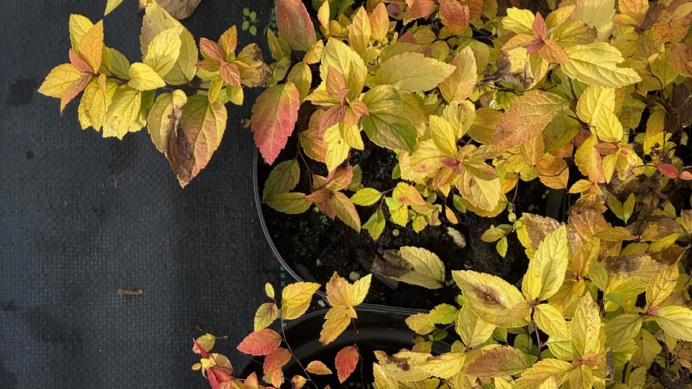

В день посадки
Как посадить куст, чтобы он прижился
- Яма в 1,5–2 раза шире земляного кома
- Корневая шейка — на уровне почвы, не заглублять
- Обильный полив сразу после посадки, даже в дождь
- Мульча 5–7 см: кора, щепа или торф